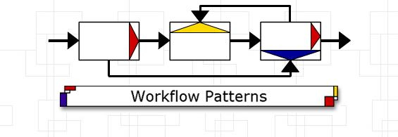
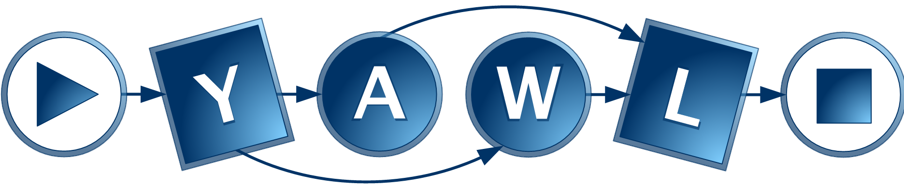

Praeclarus Process Data Quality
PraeclarusPDQ is an initiative sponsored by the BPM Group at Queensland University of Technology. It is an open-source framework which aims to host ‘plug-in’ solutions to various process-data quality issues. The PraeclarusPDQ framework development is being undertaken jointly by the BPM Group at Queensland University of Technology (Australia) and the Process Analytics research team at Kiel University (Germany). Other participants in the initiative include University of Bayreuth (Germany) with active interest and involvement from Waves PI, a Netherlands based process mining and consulting company.
An open source artefact, the PraeclarusPDQ framework, is under development to make available all software solutions that we develop. Publications and further information can be found on the process data quality web site.

Workflow Patterns
The research on workflow patterns has been applied in evaluating web service composition standards such as BPML and BPWEL4WS. This work has also been used in an analysis of UML activity diagrams (both versions 1.4 and 2.0), BML, a language used for Enterprise Application Integration, and BPMN, a proposed notation for business process modelling. In the context of the BABEL project, the patterns have been extended for the data and the resource perspectives. In addition, research has been conducted into exception handling patterns and into coupling patterns. More recently, a patterns-based evaluation of three scientific workflow management systems has been conducted and a collection of patterns for managing complexity in process models has been proposed.

YAWL Initiative
The workflow patterns have given rise to YAWL: Yet Another Workflow Language, a powerful workflow language with a formal syntax and a formal semantics. The support environment for YAWL is an open source project, supported by industry partners, and a number of releases have been made available for download.